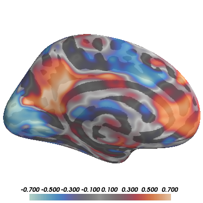
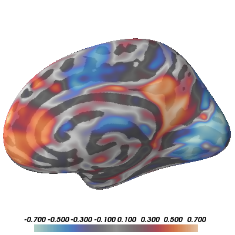

Note
Click here to download the full example code
Display Resting-State Correlations¶
In this example, we show how to build up a complex visualization of a volume-based image showing resting-state correlations across the whole brain from a seed in the angular gyrus. We’ll plot several views of both hemispheres in a single window and manipulate the colormap to best represent the nature of the data.


- 
- 
Out:
mri_vol2surf --mov /home/larsoner/python/PySurfer/examples/example_data/resting_corr.nii.gz --hemi lh --surf white --reg /home/larsoner/applications/freesurfer-6/average/mni152.register.dat --projfrac-avg 0 1 0.1 --surf-fwhm 3 --o /tmp/pysurfer-v2sy55r3m1u.mgz
mri_vol2surf --mov /home/larsoner/python/PySurfer/examples/example_data/resting_corr.nii.gz --hemi rh --surf white --reg /home/larsoner/applications/freesurfer-6/average/mni152.register.dat --projfrac-avg 0 1 0.1 --surf-fwhm 3 --o /tmp/pysurfer-v2spedpkld9.mgz
colormap divergent: center=0.00e+00, [0.00e+00, 3.50e-01, 7.00e-01] (opaque)
colormap divergent: center=0.00e+00, [0.00e+00, 3.50e-01, 7.00e-01] (opaque)
colormap divergent: center=0.00e+00, [2.00e-01, 5.00e-01, 7.00e-01] (transparent)
colormap divergent: center=0.00e+00, [0.00e+00, 3.50e-01, 7.00e-01] (transparent)
import os
from surfer import Brain, project_volume_data
print(__doc__)
"""Bring up the visualization"""
brain = Brain("fsaverage", "split", "inflated",
views=['lat', 'med'], background="white")
"""Project the volume file and return as an array"""
mri_file = "example_data/resting_corr.nii.gz"
reg_file = os.path.join(os.environ["FREESURFER_HOME"],
"average/mni152.register.dat")
surf_data_lh = project_volume_data(mri_file, "lh", reg_file)
surf_data_rh = project_volume_data(mri_file, "rh", reg_file)
"""
You can pass this array to the add_overlay method for a typical activation
overlay (with thresholding, etc.).
"""
brain.add_overlay(surf_data_lh, min=.3, max=.7, name="ang_corr_lh", hemi='lh')
brain.add_overlay(surf_data_rh, min=.3, max=.7, name="ang_corr_rh", hemi='rh')
"""
You can also pass it to add_data for more control
over the visualization. Here we'll plot the whole
range of correlations
"""
for overlay in brain.overlays_dict["ang_corr_lh"]:
overlay.remove()
for overlay in brain.overlays_dict["ang_corr_rh"]:
overlay.remove()
"""
We want to use an appropriate color map for these data: a divergent map that
is centered on 0, which is a meaningful transition-point as it marks the change
from negative correlations to positive correlations. By providing the 'center'
argument the add_data function automatically chooses a divergent colormap.
"""
brain.add_data(surf_data_lh, 0, .7, center=0, hemi='lh')
brain.add_data(surf_data_rh, 0, .7, center=0, hemi='rh')
"""
You can tune the data display by shifting the colormap around interesting
regions. For example, you can ignore small correlation up to a magnitude of 0.2
and let colors become gradually less transparent from 0.2 to 0.5 by re-scaling
the colormap as follows. For more information see the help string of this
function.
"""
brain.scale_data_colormap(.2, .5, .7, transparent=True, center=0)
"""
You can also set the overall opacity of the displayed data while maintaining
the transparency of the small values.
"""
brain.scale_data_colormap(0, .35, .7, transparent=True, center=0,
alpha=0.75)
"""
This overlay represents resting-state correlations with a
seed in left angular gyrus. Let's plot that seed.
"""
seed_coords = (-45, -67, 36)
brain.add_foci(seed_coords, map_surface="white", hemi='lh')
Total running time of the script: ( 0 minutes 8.773 seconds)